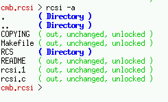

Copyright Colin Brough, 1994-2003
rcsi is free software; you can redistribute it and/or modify it under the terms of the GNU General Public License as published by the Free Software Foundation; either version 2, or (at your option) any later version.
rcsi is distributed in the hope that it will be useful, but WITHOUT ANY WARRANTY; without even the implied warranty of MERCHANTABILITY or FITNESS FOR A PARTICULAR PURPOSE. See the GNU General Public License for more details.
You should have received a copy of the GNU General Public License along with rcsi; see the file COPYING. If not, write to the Free Software Foundation, 675 Mass Ave, Cambridge, MA 02139, USA.
$Id: README.html,v 1.3 2003/04/19 22:59:47 cmb Exp $
| cmb.rcsi > rcsi | |
| COPYING | ( out, unchanged, unlocked ) |
| Makefile | ( out, *revised*, cmb:1.5 ) |
| RCS | ( Directory ) |
| README | ( out, unchanged, unlocked ) |
| README~ | ( Not under RCS ) |
| rcsi | ( Not under RCS ) |
| rcsi-0.1 | ( Directory ) |
| rcsi.c | ( out, *revised*, cmb:1.10 ) |
| cmb.rcsi > |
You may also specify files on the command line:
| cmb.rcsi > rcsi COPYING README rcsi.c | |
| COPYING | ( out, unchanged, unlocked ) |
| README | ( out, unchanged, unlocked ) |
| rcsi.c | ( out, *revised*, cmb:1.10 ) |
| cmb.rcsi > |
| Example 1 | Example 2 |
|  | |
A numer of options are available to limit the output, for example only to changed files, or only files with locks.
Contact me with comments, bug reports, etc.
I'll generally try and make the most recent version of rcsi available as a gzipped tar file from:
(or similar, depending on version number).